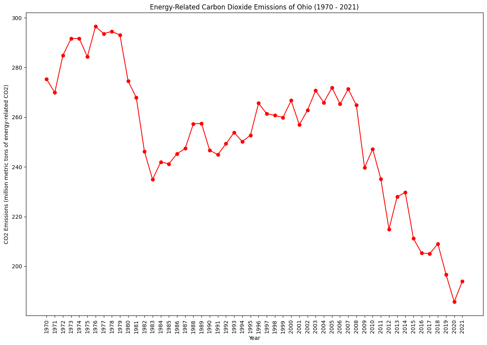
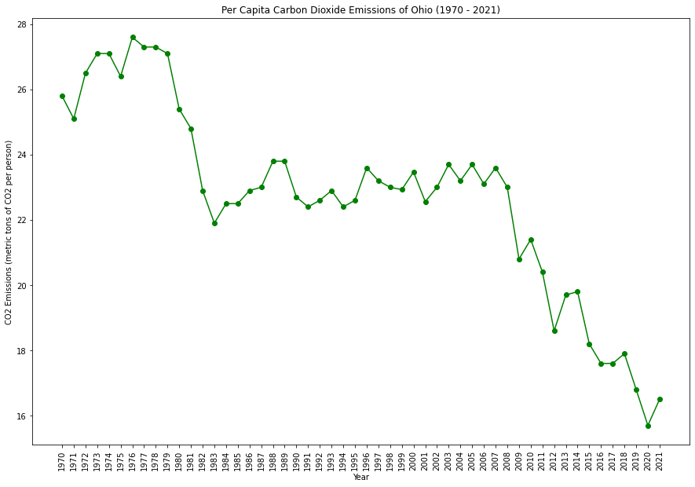
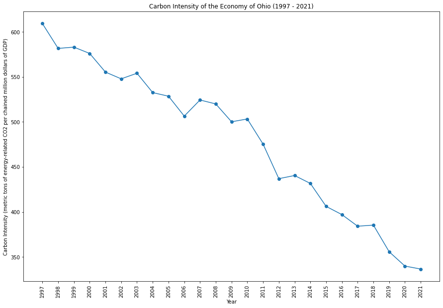
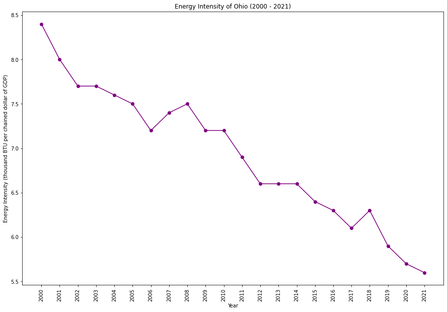

|  |  |
|  |  |
Ohio has a diverse energy mix, with a historical reliance on coal. The state has been working on diversifying its energy sources, incorporating renewables and natural gas. Efforts to improve energy efficiency and reduce emissions are ongoing, but the transition away from traditional fossil fuels poses economic challenges.